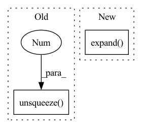

Pattern ID :1675
Before Change
dist_ap, dist_an = [], []
for i in range(n):
dist_ap.append(dist[i][pos_mask[i]].max().unsqueeze(0 ) )
dist_an.append(dist[i][neg_mask[i]].min().unsqueeze(0))
dist_ap = torch.cat(dist_ap)After Change
// hard examples mining
n, m = f.size(0), xbm_f.size(0)
identity_mat = labels.expand(m, n).t().eq(xbm_labels.expand( n, m) ).float()
dist_ap, dist_an = hard_examples_mining(dist_mat, identity_mat)
// Compute ranking hinge lossIn pattern: SUPERPATTERN
Frequency: 3
Non-data size: 2
Instances Fragment ID: 6706404
Project Name: thuml/transfer-learning-library
Commit Name: 0f8f51c4b2fac78edf87e29764e4da3deec6f65f
Time: 2021-10-14
Author: 57670068+tsingcbx99@users.noreply.github.com
File Name: common/vision/models/reid/loss.py
M Class Name: TripletLossXBM
N Class Name: TripletLossXBM
M Method Name: forward(5)
N Method Name: forward(5)
M Parent Class: nn.Module
N Parent Class: nn.Module
M File Name: common/vision/models/reid/loss.py
N File Name: common/vision/models/reid/loss.py
M Start Line: 132
M End Line: 152
N Start Line: 154
N End Line: 162
Before Change
// [*, 4]
quats = torch.cat((ones.expand(*quats.shape[:-1], 1), quats), dim=-1)
quats = quats / norm_denom.unsqueeze(-1 )
// [*, 3, 3]
rots = quat_to_rot(quats)
After Change
// [*, 3]
ones = (
s.new_ones((1,) * len(quats.shape)).expand( quats.shape[:-1] + (1,))
)
// [*, 4]
quats = torch.cat([ones, quats], dim=-1)
quats = quats / norm_denom[..., None] Fragment ID: 6706402
Project Name: aqlaboratory/openfold
Commit Name: 893fe372ac1e0680f6dc4fa8ce2f341787a48e4a
Time: 2021-10-05
Author: gahdritz@gmail.com
File Name: openfold/model/structure_module.py
M Class Name: BackboneUpdate
N Class Name: BackboneUpdate
M Method Name: forward(2)
N Method Name: forward(2)
M Parent Class: nn.Module
N Parent Class: nn.Module
M File Name: openfold/model/structure_module.py
N File Name: openfold/model/structure_module.py
M Start Line: 412
M End Line: 419
N Start Line: 417
N End Line: 426
Before Change
k = self.w_ks(mel_encoding)
v = self.w_vs(mel_encoding)
src_mask = src_mask.float().unsqueeze(-1 ) // [batch, seq_len, 1]
mel_mask = mel_mask.float().unsqueeze(-1) // [batch, mel_len, 1]
attn_mask = torch.bmm(src_mask, mel_mask.transpose(-2, -1)).bool() // [batch, seq_len, mel_len]
After Change
src_len, mel_len = src_mask.shape[1], mel_mask.shape[1]
src_mask_ = src_mask.unsqueeze(-1).expand(-1, -1, mel_len) // [batch, seq_len, mel_len]
mel_mask_ = mel_mask.unsqueeze(1).expand( -1, src_len, -1) // [batch, seq_len, mel_len]
output, attn = self.attention(q, k, v, src_mask=src_mask_, mel_mask=mel_mask_)
Fragment ID: 6706400
Project Name: keonlee9420/parallel-tacotron2
Commit Name: 1f98efe5d09778b2b77e291aff63ef6e497c6bb9
Time: 2021-07-26
Author: 1531820402@qq.com
File Name: model/blocks.py
M Class Name: VariableLengthAttention
N Class Name: VariableLengthAttention
M Method Name: forward(5)
N Method Name: forward(5)
M Parent Class: nn.Module
N Parent Class: nn.Module
M File Name: model/blocks.py
N File Name: model/blocks.py
M Start Line: 271
M End Line: 273
N Start Line: 271
N End Line: 273